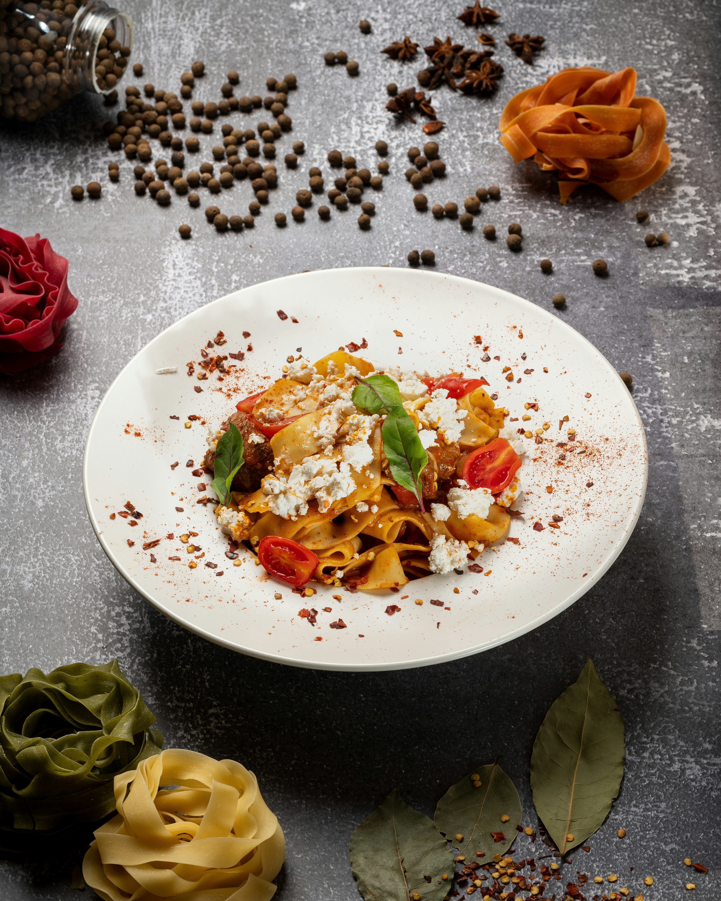

Feta Pasta

Description
This is a crowd pleaser, and my go to meal for feeding large numbers of people. Easily scalable, and a great way to handle that mid-summer cherry tomato influx that happens to all gardeners.
Pro tip: If you're feeling brave, sub out the feta block in this recipe for Boursin. It's a great substitute that adds the creamiest texture!
Ingredients
- 2 pints cherry tomatoes
- 1 cup olive oil
- One block of feta
- Two cloves of garlic, smashed
- Half a shallot, diced
- Red pepper flakes, salt and pepper to taste
- Lemon zest
- 1 package of farfalle or any other sauce-catching pasta
Steps
- Preheat the oven to 425.
- In a deep, oven safe dish, combine the cherry tomatoes, garlic and shallot with 3 tablespoons of olive oil. Roll them around to coat.
- In the center of the pan, add the block of feta. Pour additional olive oil over top, and season the entire pan with red pepper flakes.
- Place in the middle rack of the oven and let bake for 45 minutes.
- Before the feta is done baking, cook your pasta. Save about half a cup of pasta water in a measuring cup for later.
- Once your feta is looking golden, your tomatoes and blistered and breaking open, your feta dish is done. Take it out of the oven.
- With the back of a heat-safe spoon, break open the tomatoes and stir the feta. It should be creamy and melted, and will easily stir into a sauce.
- Add your pasta. If the sauce seems a bit thick add some of the reserved pasta water.
- Season the pasta and sauce with about a tablespoon of lemon zest. Add a generous handful of salt and some pepper.
- Taste for seasoning.
- Serve with a side veggie, or on its own. Enjoy!